Express框架简介
TJ Holowaychuk express框架研发者
Express 是一个简洁而灵活的 node.js Web应用框架, 提供了一系列强大特性帮助你创建各种 Web 应用，和丰富的 HTTP 工具。
简单点说express就是一个封装了很多功能的包，而你只需要用简单的express的专属的一些代码便可解决本来正常较为复杂的代码，方便你使用
Express 框架核心特性：
- 可以设置中间件来响应 HTTP 请求。
- 定义了路由表用于执行不同的 HTTP 请求动作。
- 可以通过向模板传递参数来动态渲染 HTML 页面。
简单的Express启动服务器程序
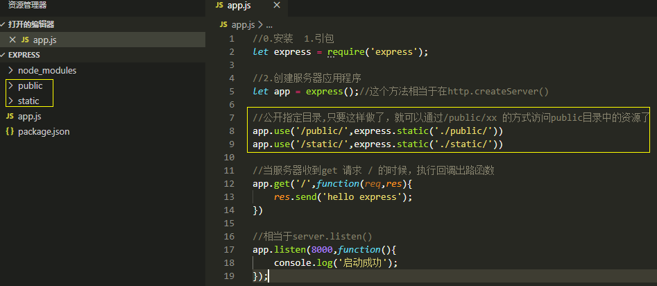
静态资源管理及路径访问问题
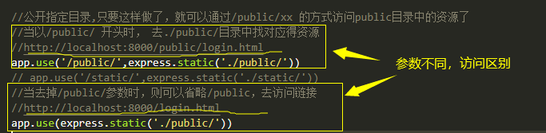
Express修改代码自动重启
我们这里使用第三方工具：nodemon 他是一个基于node.js开发的命令行工具，我们使用时要独立安转 npm install -g nodemon
完毕后，原来启动项目命令是node app.js 现在需要换成 nodemon app.js 他会自动监视文件变化，自动重启服务器
Express路由
根目录下新建router.js文件,将app.get() 和 app.post 请求全部放到router.js文件中
app.get()方法的返回值是app示例，所以可以链式调用get方法
Express中art-template模板使用
安装：npm install --save art-template
npm install --save express-art-template
可以修改默认views模板文件的找寻路径
app.set('views','目录路径')
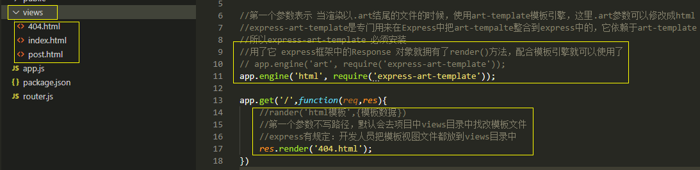
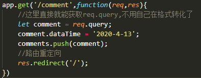
Express路由设计及使用
根据路径不同响应不同页面，根据不同的路径处理不同的数据（接口）
| 请求方法 |
请求路径 |
get参数 |
post请求参数 |
备注 |
| GET |
/students |
|
|
渲染首页 |
| GET |
/students/new |
|
|
渲染添加学生页面 |
| POST |
/students/new |
|
name gender age hobbies |
处理学生添加请求接口 |
| GET |
/students/edit |
id |
|
渲染编辑页面 |
| POST |
/students/edit |
|
id name gender age hobbies |
处理编辑请求接口 |
| GET |
/students/delete |
|
id |
处理删除请求接口 |
路由使用
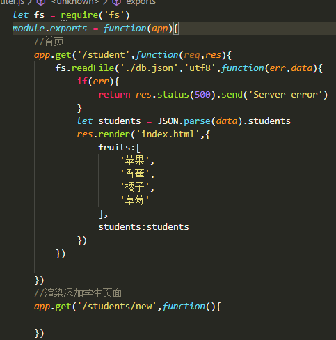
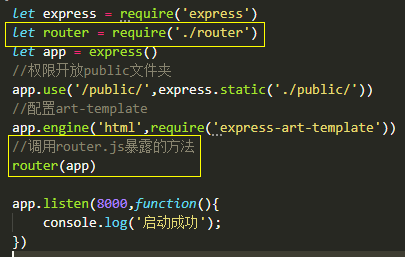
路由使用的更好的方式
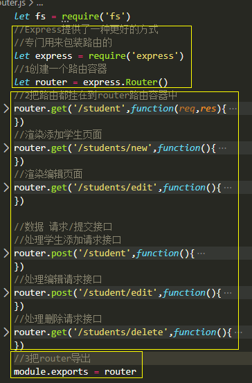
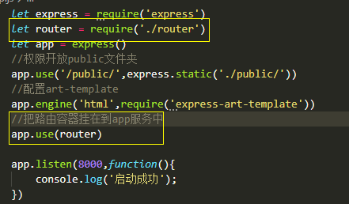
设计操作学生数据的api文件模块(下面是node的精华所在)
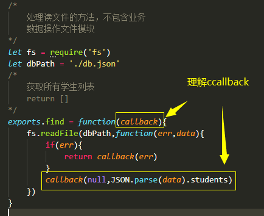
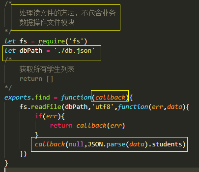
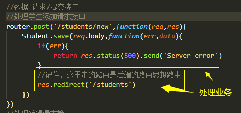
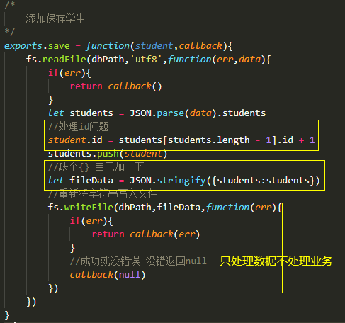
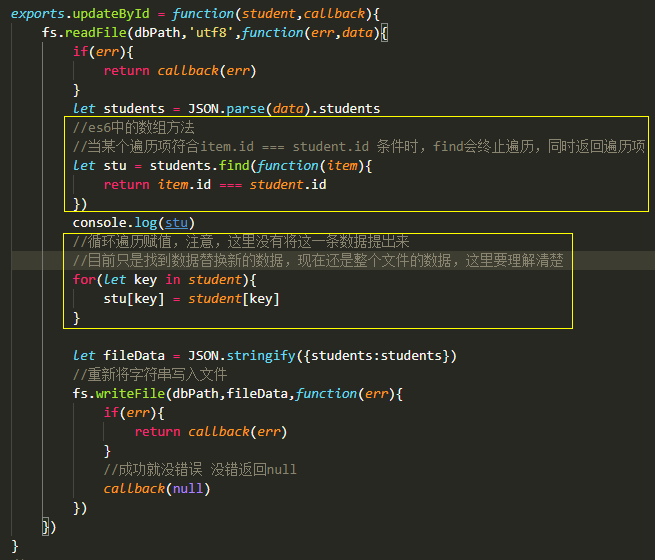
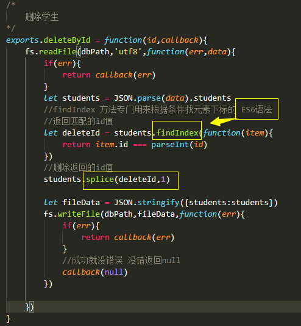
未完待续~~~